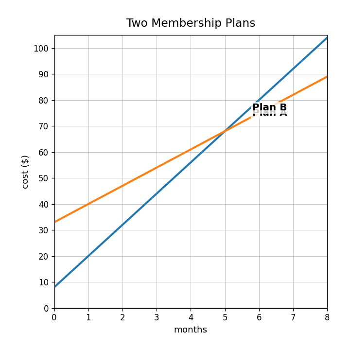
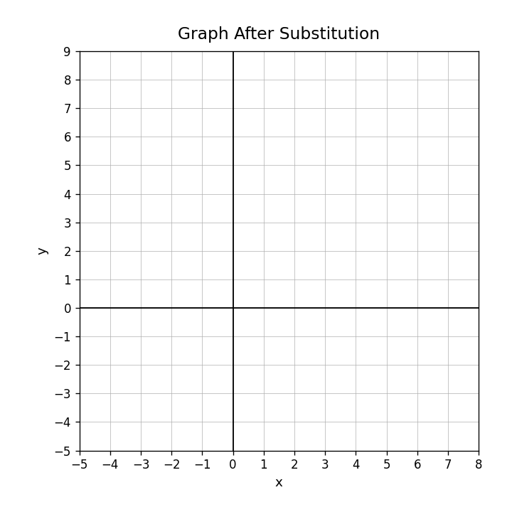
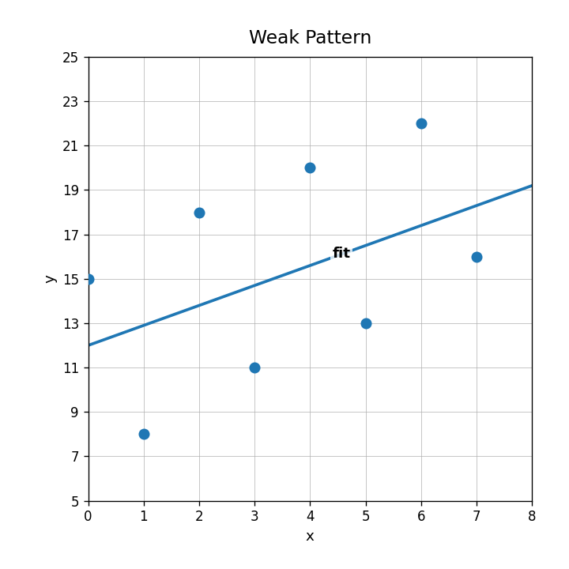

Practice Set 3.2.3
In the system $x=2y+1$ and $3x-y=23$, which expression could replace $x$?
Solve the system using substitution.
$$x=2y+1$$
$$3x-y=23$$
Verify your solution from the previous type of system by substituting into both original equations. Explain why checking both matters.
Two membership plans are shown. Write a system that could match the graph, solve it, and interpret the solution in context.

How can you tell from a graph that a system has exactly one solution?
What do the equations $y=2x+1$ and $y=2x-5$ show about solution type?
Use the graph. Is the labeled solution on both lines?

What equation would result from adding $3x+2y=16$ and $-3x+y=2$?
Graph the system on the grid and estimate the solution.
$$y=x+1$$
$$y=-2x+7$$

Solve using elimination.
$$3x+2y=16$$
$$-3x+y=2$$
Explain why graphing and elimination should produce the same ordered pair when a system has one solution.
Change one number in $y=2x+1$ and $y=2x-5$ so the system has exactly one solution. Explain your revision.
Describe the association in the weak pattern graph.

The model is $y=3.6x+50$. For $x=4$, the actual value is 65. Find the residual.
If a data point is above the line of fit, explain how the actual value compares to the predicted value.
A student says the weak pattern graph proves a strong relationship. Critique the claim using evidence from the graph.